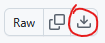

YouTube sub list to Map
use
https://github.com/IronEyedDrgn/YT-sub-map
to convert your google takeouts file for use here
or go
HERE
and click "download raw file" directly 
Go To page with my own map
Select SubList file (with countries):
YAPMS
(Yet Another Political Map Simulator)
World - United Nations Map
Download
Link to Map Template
Map Chart
Compatible with all modern International Maps
Colour
Range (inclusive)
ADD ROW
Use Defaults
Include empty headings?
Download
Link to full world map
click and pop-up of either
simple number list : country:num
unique count list: num: number countries